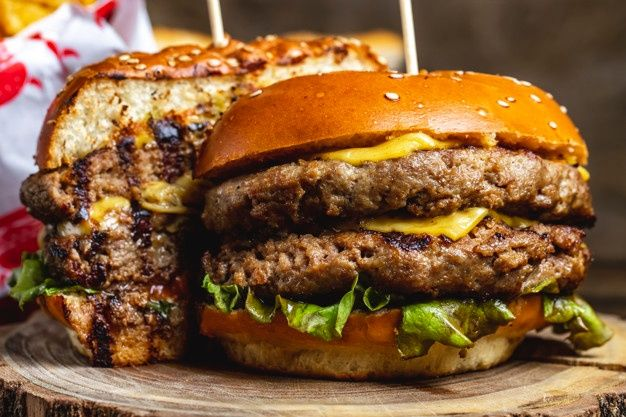

Double Cheeseburger

Description
A double cheesburger is a hamburger with 2 meat patties
with each topped with cheese. The cheese is usually added to the
cooking burger patties shortly before serving, which allows the cheese
slices to melt. There are different variations of ingredients and condiments
used, and it may include toppings such as lettuce, tomato, onion, pickles,
bacon, mayonnaise, ketchup, and mustard.
This is sold in many fast food restaurants, and the cheeses
they use is usually processed cheese. However, other meltable cheeses
may be used as alternatives, such as cheddar, Swiss, mozzarella,
blue cheese, and pepper jack. Some fast food restaurants include McDonald's, Burger
King, and Wendy's. This recipe will be a homemade version, which utilizes
natural ingredients and should be of higher value.
Ingredients
Original recipe yielding 1 serving
- 1 hamburger bun, split
- 1/3 pound ground beef
- 1 pinch salt
- 4 processed cheese singles (ex: Kraft®)
- 1 tablespoon thousand island salad dressing (ex: Kraft®)
- 1 slice tomato
- 1 leaf lettuce
- 1 slice onion
Steps
- Preheat a skillet over medium heat. Lightly toast both halves
of the hamburger bun, cut sides down, 2 to 3 minutes. Set aside.
- Separate beef into 2 portions and form each into a thin patty slightly larger
than the bun. Lightly salt each patty and cook on one side for 2 to 3 minutes. Flip
patties over and immediately place two slices of cheese on each one. Cook until meat
has reached desired doneness, 2 to 3 minutes more. An instant-read thermometer inserted
into the center should read at least 160 degrees F (70 degrees C).
- Assemble the double cheeseburger in the following order:
- bottom bun
- dressing
- tomato
- lettuce
- beef patty with cheese
- onion
- beef patty with cheese
- top bun